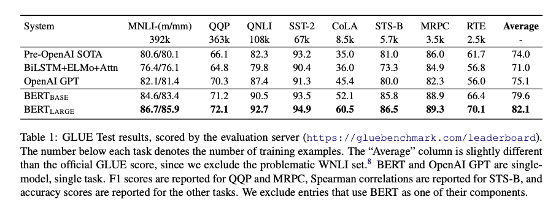

GLUE
The General Language Understanding Evaluation (GLUE) benchmark is a collection of natural language understanding tasks. GLUE was fine-tuned by adding only an additional classification layer weights where is the number of labels. Standard classification loss is computed with and . They found that fine-tuning was sometimes unstable on small datasets, so they mitigated the problem with random restarts and manually selecting best models.
Results are shown in Table 1. BERT outperforms all previous systems on all tasks by a significant margin.

SQuAD v1.1
The Stanford Question Answering Dataset is a collection of 100k question/answer pairs. The task is to predict the answer span given a passage. BERT is augmented only with single additional start and end vectors. Table2 shows the leaderboard results at the time of the paper’s writing.
SQuAD v2.0
SQuAD v2.0 extends v1.1 by allowing for the possibility that no short answer exists in the provided paragraph. This makes the problem more realistic.
To account for this potential situation, the BERT model treats the questions that do not have an answers as having an answer span with start and end at the [CLS] token. The model saw a +5.1 boost in F1 over previous best.
SWAG
The Situations with Adversarial Generations dataset contains 113k sentence-pair completion examples that evaluate common sense reasoning. Given a sentence the task is to choose the most plausible continuation among four choices.
Table 4 shows BERTs results.